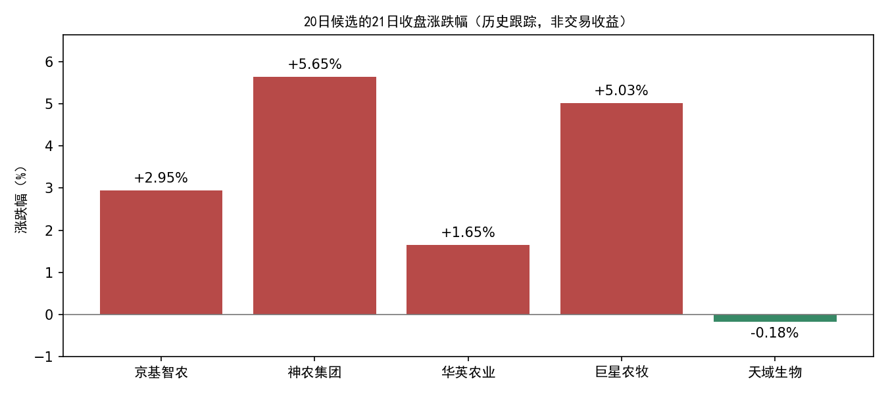

已将A股数据更新至2026年10月21日收盘，完成冻结、板块构建和当前策略扫描。新首次确认0个，进入个股筛选0个板块，新个股候选0只。
年度板块模型继续暂停过滤，仅保留诊断；不使用旧随机分组模型评分决定资格。数据更新与数据集构建使用原封装程序，只增加本次日期配置，原工程代码、模型权重及策略规则哈希未变。
本次新增1个交易日、5,568条有效股票日线。行情、复权、日度指标和资金流覆盖本次全部有交易股票；关键字段无缺失，重复键、OHLC异常、复权不一致均为0，成交量、成交额与原始数据按既有单位换算后一致。
| api | raw_rows | covered | missing |
|---|---|---|---|
| daily | 5568 | 5568 | 0 |
| adj_factor | 5578 | 5568 | 0 |
| daily_basic | 5568 | 5568 | 0 |
| moneyflow | 5576 | 5568 | 0 |
上市主档5,578条 = 5,568条有效行情 + 8只全日停牌 + 2条此前已发现的过期上市状态（信达、东兴）。停牌名单已通过既有接口按21日重新查询，详见无行情原因。两家终止上市依据沿用上次核验报告。
更新前后20日及以前全部2026日线逐行一致；更新产物哈希和冻结快照校验通过。2026分区实测1,051,857行。
新板块数据含103个有效板块，当日成员归属覆盖79.31%。既有行业历史完整性/PIT限制仍在；美股、基准指数和全仓库名称历史未在本次同步。这些数据不参与本次信号生成，不能把本次A股更新描述成全仓库已完整。
| 环节 | 21日结果 |
|---|---|
| 有效板块 | 103 |
| 观察池 | 7 |
| 触发层 | 7 |
| 当日形态确认 | 1 |
| 去重后新首次确认 | 0 |
| 进入个股筛选的板块 | 0 |
| 本次评分个股 | 0 |
| 新候选 | 0 |
| 板块 | 代码 | 21日形态确认 | 本轮涨幅 | 距峰值回撤 | 距参照位 | 最近首次确认 | 是否21日首次 | 状态说明 |
|---|---|---|---|---|---|---|---|---|
| 农产品加工 | 801012.SI | 否 | 31.01% | -17.22% | 2.82% | 2019-05-13 00:00:00 | 否 | 近期未破支撑 |
| 渔业 | 801015.SI | 否 | 26.83% | -16.85% | 1.71% | 2025-01-07 00:00:00 | 否 | 近期未破支撑 |
| 贵金属 | 801053.SI | 否 | 30.42% | -22.69% | -8.79% | 2024-07-01 00:00:00 | 否 | 近期未破支撑；下跌尚未减速 |
| 房地产服务 | 801183.SI | 否 | 19.86% | -12.16% | 3.14% | 无 | 否 | 近期未破支撑 |
| 酒店餐饮 | 801219.SI | 是 | 16.99% | -15.47% | -7.62% | 2026-09-17 00:00:00 | 否 | 旧事件再次满足形态 |
| 航海装备Ⅱ | 801744.SI | 否 | 16.83% | -10.12% | -0.12% | 2025-10-21 00:00:00 | 否 | 近期未破支撑；下跌尚未减速 |
| 焦炭Ⅱ | 801952.SI | 否 | 17.73% | -13.18% | -0.78% | 2025-11-25 00:00:00 | 否 | 近期未破支撑 |
当日满足形态与新的首次确认是两件事。养殖业20日事件的原入场有效日是21日，不顺延至22日；酒店餐饮旧事件也不重开。暂停年度板块判断没有取消事件去重或延长入场窗口。
与20日相比：养殖业、医疗服务退出观察层，航海装备Ⅱ进入观察层。养殖业21日反弹后距本轮峰值回撤为-7.49%，未达到原规则至少10%的回撤要求，当前回落门槛未过。航海装备Ⅱ仍缺近期跌破支撑和下跌减速两个条件。状态变化明细
本次没有新个股候选。 当前策略只对当日去重后的首次确认执行个股筛选；无新事件时，个股评分流程按规则跳过，不是个股评分全部失败。
本次是21日的正式当前策略扫描，记录类型 current_policy_scan，对应下一交易日22日；不是按新规则回填旧信号。模型报告不等同于订单或成交，未执行任何交易。
以下保留20日的候选身份，仅列21日价格变化；不是22日新推荐，也没有按21日涨跌重新排序。涨跌幅采用行情字段，不是实际买入收益或策略回测收益。
| 20日候选 | 代码 | 20日收盘 | 21日收盘 | 21日涨跌幅 |
|---|---|---|---|---|
| 京基智农 | 000048.SZ | 14.57 | 15.00 | +2.95% |
| 神农集团 | 605296.SH | 28.68 | 30.30 | +5.65% |
| 华英农业 | 002321.SZ | 1.82 | 1.85 | +1.65% |
| 巨星农牧 | 603477.SH | 13.33 | 14.00 | +5.03% |
| 天域生物 | 603717.SH | 5.61 | 5.60 | -0.18% |

行情快照：datahub/releases/selection_live_20261021_eod；内容ID：615021535699c648a382255f3bfd6fc3ac9fdb985032dfef19ab91f1f182a8a3。
python alpha_lab/experiments/sector_live_v1/update_market.py --config alpha_lab/experiments/sector_live_v1/config_20261021_eod.yaml
python datahub/scripts/frozen_research.py run --release datahub/releases/selection_live_20261021_eod alpha_lab/scripts/build_sector_dataset.py --config alpha_lab/experiments/sector_live_v1/dataset_config_20261021_eod.yaml
python datahub/scripts/frozen_research.py run --release datahub/releases/selection_live_20261021_eod alpha_lab/experiments/sector_live_v1/scan_sectors.py --dataset /root/autodl-tmp/alpha_lab/data/sector_live_datasets/sw_l2_v1_20261021T171918_920041Z --config alpha_lab/experiments/sector_live_v1/config_20261021_eod.yaml
python datahub/scripts/frozen_research.py run --release datahub/releases/selection_live_20261021_eod alpha_lab/experiments/sector_live_v1/scan_stocks.py --scan /root/autodl-tmp/alpha_lab/outputs/sector_live_scan/20261021T172443_233422Z
更新已完成，不应再次执行首条增量下载；复现模型可以直接使用已冻结快照及后续命令。未重新训练模型、修改筛选门槛或回填历史事件。